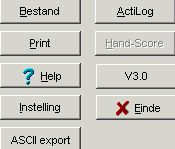
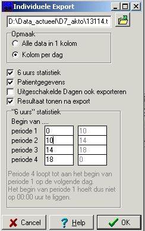
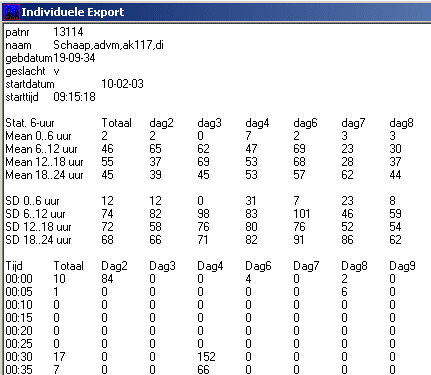
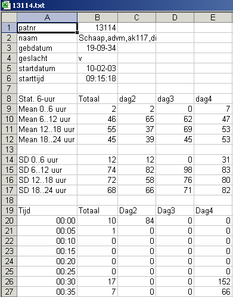

| Overzicht MidOrg |
ActiLog |
|
| Export |
| Met behulp van de knop "ASCII
export" kan de ruwe (gecalibreerde) data worden geexporteerd naar een
bestand. Het bestand is opgebouwd als een "tab-delimited file", dat
ingelezen kan worden in ieder willekeurig windows pakket (Excel, SPSS,
SAS). |
 |
| Bij de export kunnen een aantal
zaken worden ingesteld, zoals hier rechts aangegeven. De bestandsnaam wordt automatisch bepaald, door van het orginele bestand de extensie te veranderen in "txt". De bestandsnaam en het path kunnen worden gewijzigd door deze te editten danwel via de browse knop een ander bestand te selecteren. De data kan op 2 verschillende wijze worden uitgevoerd, precies zoals in de orginele opname (maar dan gecalibreerd) of netjes uitgelijnd op dagen ("Kolom per dag"). Als het vakje "6 uurs statistiek" is aangeklikt, worden per dag over 4 perioden van ieder 6 uur (0..6, 6..12 , 12..18 , 18..24) de gemiddelden en standaard deviaties uitgerekend en opgenomen in de export. Vanaf versie 4.5 kunnen deze 4 perioden worden ingesteld, ze moeten nog steeds aaneensluitend zijn, samen de gehele periode van 24 uur beslaan. De eerste periode hoeft niet op 0 te beginnen, maar mag bijvoorbeeld ook om 7 uur beginnen. De laatste periode loopt dan door tot de volgende dag 7 uur. De "6-uurs statistiek" wordt ook naar een scanning SPSS export meegnomen, zie de rechts, onder het plaatje voor de kolomnamen. Ook de gemiddelden over de afzonderlijke dagdelen worden in de SPSS export meegenomen. Met het vakje "Patientgevens" kan aangeven worden of de patient gegevens wel of niet in de exportfile worden opgenomen. Indien het vakje "Uitgeschakelde dageb ook exporteren" niet is aangekruist, worden alleen de ingeschakelde dagen getoond. De gemiddelde waarden in de kolom "Totaal" worden altijd alleen berekend over de ingeschakelde dagen. Als het vakje "Resultaat tonen na export" is aangekruist, wordt na het aanmaken van de exportfile, de inhoud direct getoond. |
 kolomnamen in de SPSS-export van de "6-uurs statistiek", zoals hierboven aangegeven: m0_10, m10_14, m14_18, m18_0 s0_10, s10_14, s14_18, s18_0 afzonderlijke dagdelen kolomheaders ddm<i> waarbij <i> start bij 1 en doorlopend wordt opgehoogd |
| Rechts de weergave van de inhoud
van het export bestand, zoals dit wordt getoond direct na het uitvoeren
van de export. De standaard deviatie van het "Totaal", is berekend door de SD van de individuele dagen te middelen. |
 |
| Hier hetzelfde bestand maar nu
geopend in Excel. |
 |